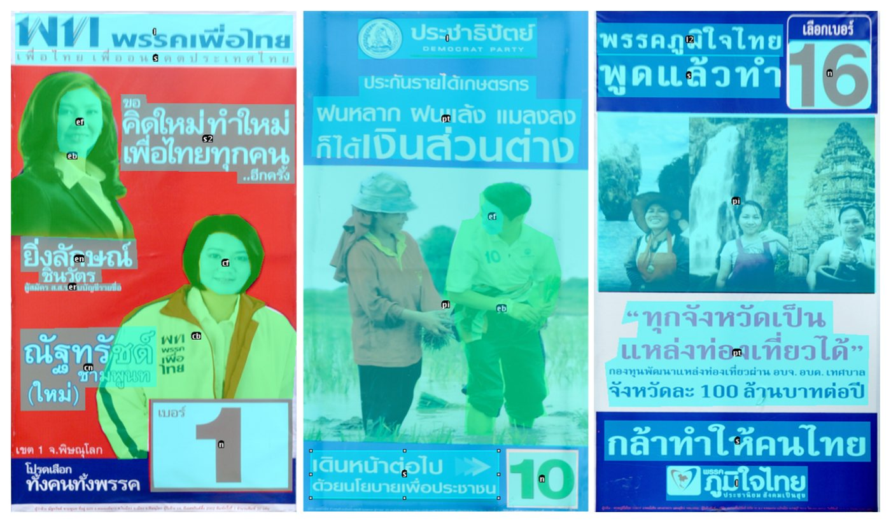

Data & Papers › Dataset
Thai Election Posters
I photographed over 12,000 posters across Thailand in the 2011 election and over 18,000 more in 2023, returning to the same regions and streets. The 2011 posters are coded for how much of each poster goes to images and text, which shows whether a campaign is pitched locally or nationally; coding of the 2023 posters is under way. Together they will show what has changed in Thai campaigning, and what has stayed the same.
About the data
- Elections
- Thailand’s 2011 general election, both constituency (single-member) and party-list campaigns; the 2023 general election.
- 2011 posters
- 12,114 geocoded posters from 34 constituencies: four in Bangkok and ten each in the north, northeast and south; 588 distinct designs from 22 parties.
- 2023 posters
- Over 18,000 posters photographed in the same regions and on the same streets; coding under way.
- Coded for
- The share of each poster given to the candidate’s image, the party leader’s image, policy, slogans and the party label, measured with specialized software; politicians’ clothing; and the policies promoted.
- Materials
- Codebook · Supplementary A (summary statistics) · Supplementary B (robustness checks)
How posters were coded


Papers using the data
- 2018
Is All Politics Local? Determinants of Local and National Election Campaigns
Comparative Political Studies 51(14): 1899–1934.
In recent decades election campaigns have shifted their focus from the local to the national level, increasingly featuring party leaders, labels, and national platforms. Despite this trend, there remains significant variation in the local/national orientation of campaigns across countries and parties. This article tests several propositions on why campaigns adopt a local or national orientation by analyzing a unique collection of more than 12,000 geocoded Thai election posters. Specialized software was used to measure the spatial proportions of visual and textual content on each poster. Using Thailand's mixed electoral system to enable a controlled comparison of electoral rules, I demonstrate that proportional rules were associated with national campaign strategies whereas majoritarian rules fostered local strategies. In addition, large parties ran party-centered, policy-focused campaigns whereas small parties relied more on their leader's image. This contrasts with Western countries, where large parties increasingly promote their leader's image and small parties emphasize narrower policy objectives.
- 2019 What an Election Poster Can Tell Us about Thai Election Campaigns Thai Data Points, March 30.
- In progress The Personalization of Politics in Thailand: What 30,000 Election Posters Can Tell Us Working paper using both the 2011 and 2023 posters.
Using and citing the data
The coded 2011 data, with the codebook and the code that reproduces the article’s results, are published as a replication package on Harvard Dataverse. The 2023 posters are not yet public. Please cite the article and its replication package; the Dataverse page gives the full data citation.
ภาษาไทย
ผมถ่ายภาพโปสเตอร์หาเสียงเลือกตั้งกว่า 12,000 แผ่นทั่วประเทศไทยในการเลือกตั้งปี พ.ศ. 2554 (ค.ศ. 2011) และอีกกว่า 18,000 แผ่นในการเลือกตั้งปี พ.ศ. 2566 (ค.ศ. 2023) โดยกลับไปยังภูมิภาคและถนนเดิม โปสเตอร์ปี 2554 ได้รับการวัดสัดส่วนพื้นที่ของภาพและข้อความ ซึ่งบ่งบอกว่าการหาเสียงเน้นระดับท้องถิ่นหรือระดับชาติ ส่วนโปสเตอร์ปี 2566 อยู่ระหว่างการลงรหัส เมื่อนำมารวมกันจะแสดงให้เห็นว่าการหาเสียงของไทยเปลี่ยนไปอย่างไร และอะไรที่ยังคงเหมือนเดิม